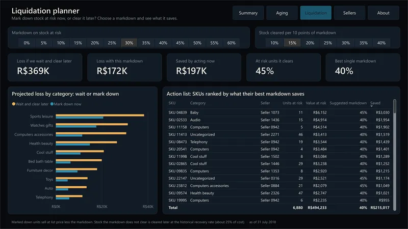

Reporting Ecosystems
Build the single source of truth.
I design BI ecosystems that global leadership actually trusts and uses: Weekly Business Reviews, live KPI command dashboards and holistic stock reports.
23 live metrics · 1 dashboardBusiness Intelligence Leader · Nearly 8 years at Daraz / Alibaba Group · Dhaka
I turn complex commercial and supply-chain data into faster, sharper decisions across five markets.
Scroll to begin
nearly8
Years in e-commerce analytics & supply chain
$100K+
Inventory value protected
4h→20m
Management reporting wait time
5
Markets · BD · PK · LK · NP · MM
2×
Faster dashboards for global stakeholders
For recruiters
Available now
Why I do this work
Data should shorten the distance between a question and a decision.
I've always believed numbers are really about people: customers worried about adequate stocks, the manager waiting on a report, the team trying to hit a target. I started on the retail floor of data, cleaning spreadsheets nobody wanted to touch. Nearly eight years later, I still get the same thrill when a messy table turns into a clear answer for someone to act upon.
Three pillars
Three disciplines, one outcome: decisions that happen sooner and land better.
Build the single source of truth.
I design BI ecosystems that global leadership actually trusts and uses: Weekly Business Reviews, live KPI command dashboards and holistic stock reports.
23 live metrics · 1 dashboardMake the wait disappear.
I automate high-priority reporting cycles and partner with engineering on the data-pipeline roadmap, so decisions never queue behind reports.
4 hrs → 20 minTurn insight into margin.
I connect analytics to P&L across five countries: aging-inventory risk, promotion engines, pricing and bundling, and fraud anomalies.
−5% → +2% gross marginThe story
2012 to 2017
North South University
Majored in Marketing and Finance, and graduated Magna Cum Laude on a 25% merit-based scholarship.
2017
Banglalink
A first seat at the deal table, designing propositions for enterprise clients.
2018
Daraz · Alibaba Group
Fused revenue, warehouse, product and traffic data into one stock report the whole team relied on.
2020
Daraz · Alibaba Group
Automated reporting with Power BI & Power Query, making it 50% faster. Built SQL models for forecasting and replenishment.
2021
Daraz · Alibaba Group
$100K of aging inventory protected. Retail gross margin moved −5% → +2%. Launched three promotion engines and trained 50 people for UAT.
2022
Daraz · Alibaba Group
Wrote the BRDs and functional specs, and designed solutions alongside teams in five countries.
2023 to 2026
Daraz · Alibaba Group
Led five analysts across three countries. Launched Weekly Business Reviews. Cut reporting from 4 hours to 20 minutes, made dashboards 2× faster, and surfaced high-risk anomalies with the Fraud Detection team.
“Same company, six roles. Every step up came from making someone's decision easier.”
Capabilities
Building and mentoring multi-country analyst teams, running Weekly Business Reviews, and setting the reporting roadmap with leadership.
From raw tables to trusted dashboards: modelling, transformation, and automated pipelines that stay fast at global scale.
Certified in applied AI, bringing NLP, generative AI, retrieval-augmented generation and agents into the analytics workflow.
Certifications
Always learning: 14 DataCamp courses from 2019 to 2026, plus applied AI with Alibaba International.
NLP · GenAI · RAG · Agents
Power BI Fundamentals and 8 R courses
Case files
Company data stays confidential, so these are the stories behind the numbers. Case 05 is a live project you can open.

Recommendation
From the leader who managed me directly at Daraz, as written on LinkedIn.
He created an environment where people felt supported, valued, and empowered to do their best work.
I had the pleasure of directly managing Nabil in the Commercial team at Daraz, where he led the Retail team with exceptional leadership and professionalism.
What stood out most about his management style was the calmness and compassion he brought to the team. He created an environment where people felt supported, valued, and empowered to do their best work. His ability to navigate challenges with composure, while balancing empathy with strong decision-making, makes him an excellent leader.
Beyond his managerial strengths, he has an outstanding ability to solve complex data problems. He approaches challenging analytical problems with a structured mindset, breaking down complexity into actionable insights and practical solutions that drive business outcomes.
Any organisation would be lucky to have such a people-oriented leader who combines strong analytical capabilities with exceptional problem-solving skills!
Next chapter
Open to senior BI and analytics leadership roles, and to conversations with teams who want faster decisions.